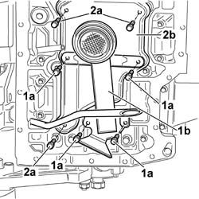
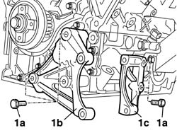
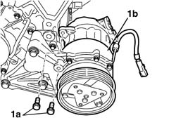
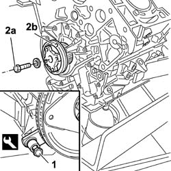
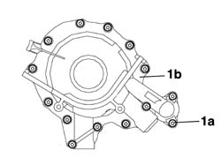
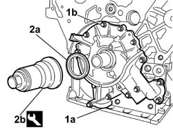
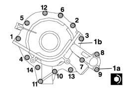

1084B14 ENGINE OIL PUMP - R+R WITH POWER UNIT REMOVED
- Path
- Procedures > 10 ENGINE > 1084 ENGINE LUBRICATION > 1084B ENGINE OIL LUBRICATION CIRCUIT > 1084B14 ENGINE OIL PUMP - R+R WITH POWER UNIT REMOVED
- Kind
- repair procedure (removal / refitting; the operation number is the code)
- Applies to
- engines: 3.0 24V V6; all production periods
- Interactive page
- https://sloeber94.github.io/elrnDB-fUlss/en/#/179007168
Applies to: engines: 3.0 24V V6; all production periods
Removing
Carry out
Op. 1004D40 ENGINE - POSITION ON STAND AND REMOVE
Op. 1020A24 CRANK CASE OIL SUMP - R + R CLEAN SEALS FOR SEALANT APPLICATION WITH ENGINE REMOVED
1. Undo the bolts (1a) and remove the suction pump (1b) for the oil pump.
2. Undo the bolts (2a) and remove the partition (2b).

Applies to: engines: 3.0 24V V6; all production periods
1. Undo the bolt (1a) and remove the fixed timing belt tensioner (1b).
Applies to: engines: 3.0 24V V6; all production periods
1. Undo the bolts (1a) and remove the air conditioning compressor support (1b) and support (1c).

Applies to: engines: 3.0 24V V6; all production periods
1. Undo the retaining bolts (1a) and remove the air conditioning compressor (1b).

Applies to: engines: 3.0 24V V6; all production periods
1. Fit the flywheel lock.
2. Undo the bolt (2a) and remove the timing belt toothed drive pulley (2b).
Description | Code | Function | |
|---|---|---|---|
1 | Counter-torque | 1.860.846.000 | Flywheel retainer |

Applies to: engines: 3.0 24V V6; all production periods
1. Undo the fixing bolts (1a) and remove the crankshaft front oil seal cover with built-in oil pump (1b).

Applies to: engines: 3.0 24V V6; all production periods
Refitting
1. Position the crankcase front cover with built-in oil pump (1a) and screw in the fixing bolts (1b) without tightening them.
2. Fit the oil seal (2a) using the tool (2b).
Description | Code | Function | |
|---|---|---|---|
2b | Fitting tool | 1.870.896.000 | Crankshaft front oil seal cover (timing side) |

Applies to: engines: 3.0 24V V6; all production periods
1. Tighten the bolts (1a) fixing the crankcase front cover with built-in oil pump (1a) following the procedure described below and the tightening order given in the diagram for each stage.
- Pre-tighten the oil pump fixing bolts to the value given in the table.
Value daNm | Fastening | Component | Ø | |
|---|---|---|---|---|
0.5 | Bolt | ENGINE OIL PUMP | M, (pre-tightening) |
- Tighten the bolts fixing the oil pump to the recommended torque.
Value daNm | Fastening | Component | Ø | |
|---|---|---|---|---|
0.8 | Bolt | ENGINE OIL PUMP | M |
- Carry out the tightening several times following the order given until each bolt is at the recommended torque.

Applies to: engines: 3.0 24V V6; all production periods
Fit the drive pulley complete with gear on the crankshaft, then tighten the fixing bolt to the recommended torque with the flywheel lock fitted.
Value daNm | Fastening | Component | Ø | |
|---|---|---|---|---|
1b | (-) 4 + 80° | Bolt | DRIVE PULLEY(PULLIES) TIMING | M |
- Remove the flywheel lock.
- Fit the air conditioning compressor mountings and tighten the fixing bolts.
- Place the air conditioning compressor on the mounting brackets fitted previously and tighten the fixing bolts.
- Fit the fixed timing belt tensioner and tighten the retaining bolt to the crankcase recommended torque.
- Position the partition and tighten the fixing bolts.
- Position the suction pump and tighten the fixing bolts.
- Complete with
Op. 1020A24 CRANK CASE OIL SUMP - R + R CLEAN SEALS FOR SEALANT APPLICATION WITH ENGINE REMOVED
- Complete with